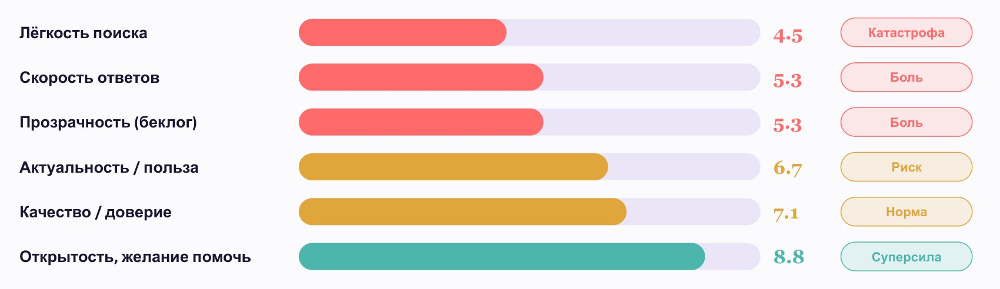
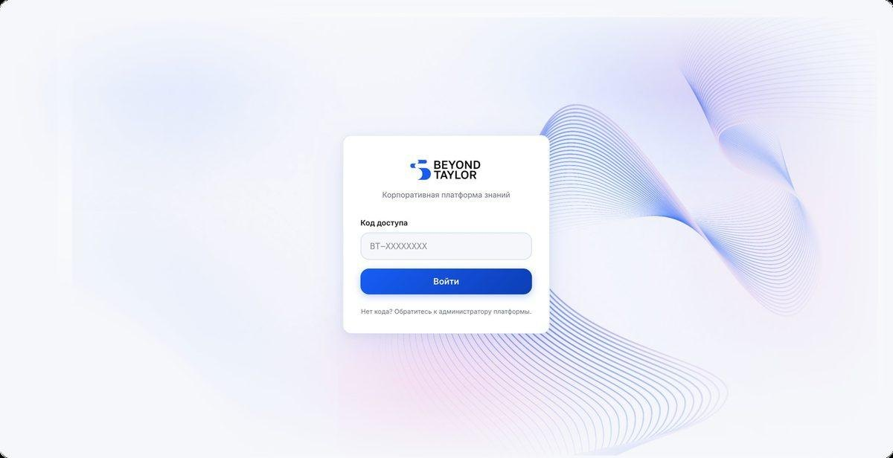
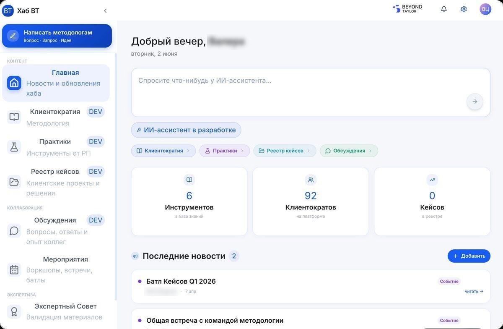
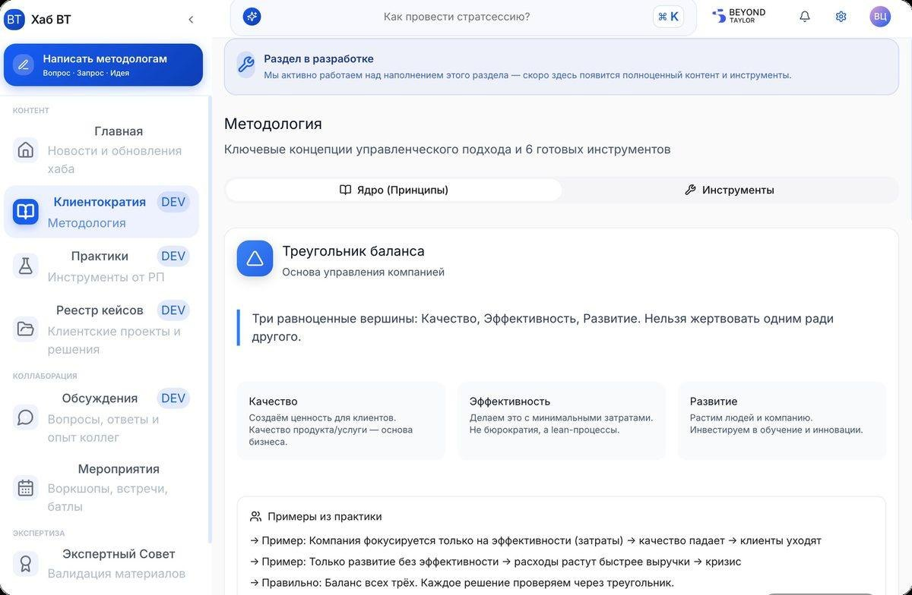
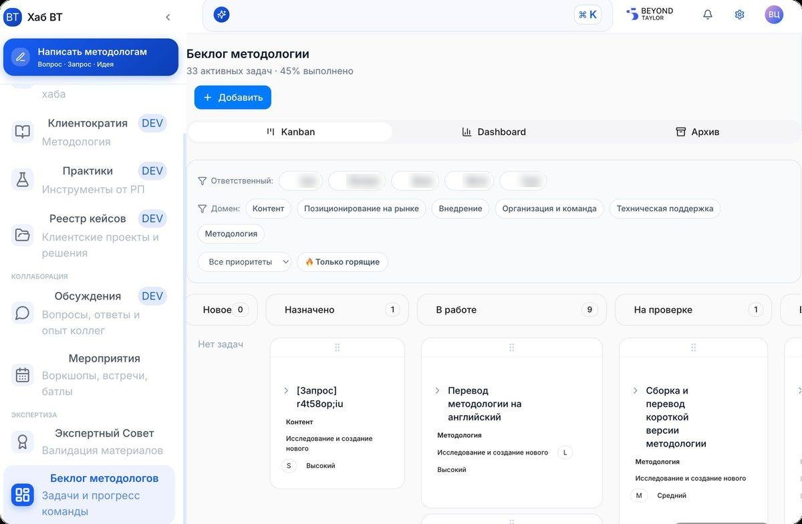
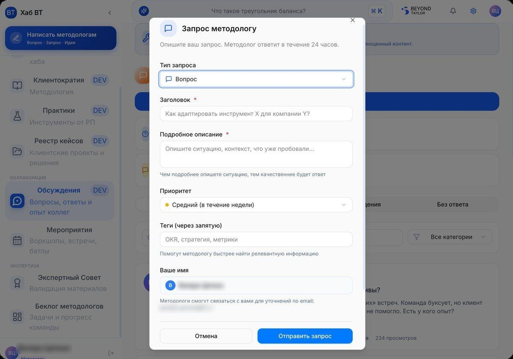

РольЛидер команды методологии: исследование пользователей, сборка платформы вайбкодингом, запуск
Контекст
«Клиентократия» — методология, по которой ВкусВилл живёт как компания. Она описывает ключевые принципы, и каждая новая команда работает в согласии с ними.
Каждая команда проходит один и тот же цикл: определение клиентов → диагностика болей → обещания и метрики → реализация решений.
Вопрос автоматизации методологии стал критичен:
Единые принципы: методология описывает, как устроена работа в компании: обещания, метрики, автономные команды. Это не теория — это операционная система ВкусВилла
Скорость разработки: нужно быстро ориентироваться в приоритетах, а значит, работа команды методологов должна стать прозрачной
Рост компании сломал прежнюю инфраструктуру: описание методологии хранилось в Google Doc, но к 2026 году он разросся до 300+ страниц — работать с ним стало нереально
Задача: собрать платформу и ИИ-агента, чтобы мгновенно находить нужные материалы и так же быстро создавать новые под выросший поток запросов.
Что было сделано
Сначала — боль будущих пользователей и метрика. Потом — инструмент.
1
Опрос пользователей
Спросили тех, кто реально работает с методологией: руководители, эксперты, новички — что происходит в ежедневной работе
2
Оценка по CSI
Каждый параметр — по 10-балльной шкале: поиск, скорость, прозрачность, актуальность, доверие, открытость
3
Глубинный CustDev с руководителями
Интервью с руководителями проектов: откуда берут информацию, что мешает, чего не хватает в работе со знаниями
4
Цветовая приоритизация
Красное — закрываем первым
Жёлтое — риск
Зелёное — бережём как силу

Входная оценка CSI по 10-балльной шкале: красное — то, что платформа закрывает в первую очередь
5
Выявили 5 болей
Информационный хаос: материалы разрознены по папкам и чатам. Непонятно, где что лежит и где смотреть
Долгий поиск: чтобы найти нужный инструмент или кейс, уходят минуты и десятки кликов
Сложность для новичков: методологию трудно освоить с нуля — нет единой точки входа и навигации
Слабое «переопыление»: опыт между командами почти не передаётся, удачные решения не видны остальным
Нет обратной связи: некуда задать вопрос методологу и негде отметить неточность в материале
Итог: знания компании работали на 30% своей силы. Нужен был единый вход и быстрый поиск.
6
Сформулировали 3 обещания команды на основе выявленных болей
Платформа — не «навести порядок в папках». Это три обещания команды методологии перед внутренними клиентами.
Полнота и применимость: методология актуальна запросам бизнеса, адаптирована под все масштабы и отрасли, понятна и легка в использовании
Поддержка каждого запроса: ни один вопрос по методологии не остаётся без ответа. Прозрачность и эмпатичность в работе с людьми
Доступность знаний: методология доступна всем, кому она нужна, — в любой момент и без усилий на поиск
Метрики целей: CSI экспертов, число «белых пятен» в беклоге (→ 0), уникальные пользователи базы, удобство поиска в опроснике
7
Собрали платформу без команды разработки
Без месяцев согласований: методолог описывает задачу человеческим языком — ИИ превращает её в работающий продукт.
Описываю боль: формулирую, что болит и каким должен быть результат — на языке бизнеса
ИИ пишет код: вайбкодинг превращает описание в интерфейс, логику и данные за минуты
Смотрю и правлю: сразу вижу результат, тестирую на реальных сценариях, докручиваю формулировками
8
Деплой за 3 минуты
Рабочая версия — у всех 92 пользователей
Итерации измеряются часами, а не спринтами
Обратная связь участников
«Было бы супер, если бы был тип ИИшка, чтобы хранился опыт всех и ответ был оперативным»
→ ИИ-ассистент
«Непонятно, где актуальная информация: файлы неактуальны, новые появляются без предупреждения»
→ единая база
«Сложно ориентироваться и искать инфо, сомнения в актуальности материалов»
→ поиск и навигация
«Я не знаю, где искать»
«Обычно пишу в чат»
«Делают что-то своё в вакууме»
Платформа: боль → решение
1
Единый вход вместо россыпи ссылок
Боль: раньше материалы жили в десятках разных мест. Не было одной двери, в которую можно войти.
Почему так:
Один адрес — вся методология компании внутри
Доступ по коду: внешние не видят внутреннюю кухню
Знакомый, спокойный интерфейс — без порога входа

2
Спросить, а не искать
Боль: поиск нужного занимал минуты и десятки кликов по папкам. Новичок просто не знал, с чего начать.
Почему так:
Строка ИИ-ассистента: задаёшь вопрос — получаешь ответ из базы
В чаты поместили бота, который дублирует все новости и предлагает перейти по ссылке на платформу
Счётчики (инструменты, люди, кейсы) показывают живую базу

Имена скрыты
3
Сложное — объяснено просто
Боль: методологию трудно освоить с нуля: тяжёлый текст, неочевидная применимость, нет наглядности.
Почему так:
Принципы и инструменты разнесены по понятным вкладкам
Каждая концепция — с примерами «как правильно / как нет»
Сначала по-человечески, потом термин

4
Прозрачная очередь задач команды
Боль: заказчики не видели, что в работе, когда ждать изменений и у кого уточнять. Беклог жил в табличке.
Почему так:
Канбан со статусами и возможность оставить комментарий по своей задаче (например, поменялся статус проекта)
Фильтры по ответственным, доменам и приоритету
Видны горящие задачи — фокус методологов на том, что важно сейчас

Имена скрыты
5
Вопросу есть куда прийти
Боль: не было единого места для вопросов и сообщений о неточностях. Запросы терялись в личках и чатах.
Почему так:
Форма с типом, приоритетом и тегами — сразу попадает в беклог
Методолог отвечает в течение 24 часов
Любой может указать на ошибку в материале — база живая

Имя и почта скрыты
6
Роли и доступ под контролем
Боль: внутренние и внешние материалы лежали вперемешку — кто что может видеть и редактировать, было непонятно.
Новый пользователь и выдача кода доступа — в пару кликов